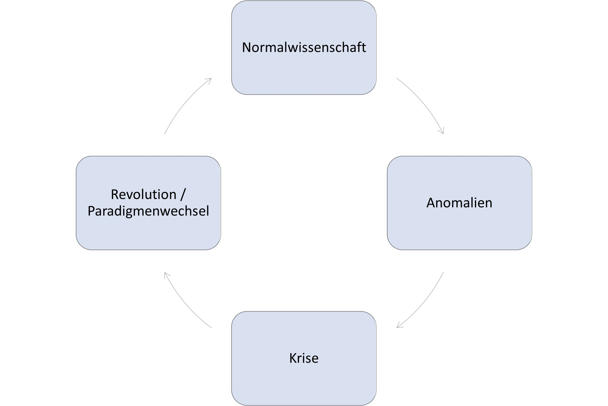

Wandel im System
Seit dem Bekanntwerden der geringen Replizierbarkeit psychologischer Studien wurde das wissenschaftliche System in vielen Aspekten hinsichtlich seiner Offenheit und Transparenz verändert. Einige Zeitschriften setzen für die Veröffentlichung wissenschaftlicher Artikel voraus, dass die Daten öffentlich zugänglich sind beziehungsweise erklärt ist, weshalb das nicht der Fall ist (z.B. bei Daten, die sich schwierig anonymisieren lassen). In seltenen Fällen wie bei der Zeitschrift Meta-Psychology rechnen Wissenschaftler*innen alle Ergebnisse nach. Als Gegenvorschlag zum “Impact Factor”, einer Kennzahl, die angibt wie oft eine Zeitschrift zitiert wird und nachweislich nichts mit der Qualität der darin enthaltenen Forschung zu tun hat (Brembs 2018), wurde der TOP-Factor eingeführt (TOP: Transparency and Openness Promotion). Dieser gibt für eine Liste von Kriterien an, in welchem Maße sie von verschiedenen Zeitschriften erfüllt werden. In anderen Feldern wie Betriebswirtschaftslehre oder Marketing werden Zeitschriften sogar von wenigen ausgewählten Forschenden über Ratingskalen bewertet, die jährlich als Rankings veröffentlicht werden. TOP-Factors hingegen sind objektiv, werden stetig aktualisiert, und sind unter topfactor.org öffentlich einsehbar und nachvollziehbar. Für jeden Faktor gibt es vier Stufen: Keine Erwähnung, Level 1, Level 2, und Level 3. Level 3 ist dabei das Ideal, zum Beispiel hieße das im Hinblick auf Transparenz von Daten, dass ein Artikel erst dann veröffentlicht wird, wenn die Daten öffentlich verfügbar sind und die Analysen von einer unabhängigen Person erfolgreich nachgerechnet (reproduziert) wurden. Zum Scoring einer Zeitschrift werden für die Levels 1-3 entsprechende Punkte vergeben und aufsummiert.1
| Faktor | Erklärung |
|---|---|
| Zitation von Daten | Den meisten Forschungsartikeln liegen Daten zugrunde. Spezifisch geht es hier um die Möglichkeit, Daten unabhängig von den Artikeln zitieren zu können (z.B. über eine eigene Kennung, wie ein Digital Object Identifier [DOI]). |
| Transparenz von Daten | Wenn möglich sollten Daten veröffentlicht werden. Das ist direkt über Fachzeitschriften oder über sogenannte Forschungsdaten-Repositorien möglich. |
| Transparenz vom Analyse-Code | Mit dem Analyse-Code werden die Forschungsdaten ausgewertet. Andere Forschende sollten die Möglichkeit haben, den Code auszuführen und die Ergebnisse zu reproduzieren bzw. zu prüfen. |
| Transparenz der Forschungsmaterialien | Bei Forschungsmaterialien kann es sich um Fragebögen, gezeigte Bilder oder Filme, aber auch präsentierte Gerüche, verkostete Früchte, oder Programme handeln. Wenn möglich, sollten auch sie (in digitaler Form) in einem Repositorium abgelegt werden. Das ist bei Gegenständen selbstverständlich nicht möglich. Bei Genen gibt es beispielsweise alphanumerische Codes, mittels welchen sich Forschende verständigen. |
| Richtlinien zum Beschreiben des Versuchsaufbaus und der Analysen | Zum Verständnis aber auch zur Nachbildung einer Studie ist es wichtig, den Versuchsaufbau genau zu beschreiben. Einige Zeitschriften haben in den letzten Jahren beispielsweise die Wortbegrenzung für die entsprechende Abschnitte in Forschungsartikeln aufgehoben. |
| Präregistrierung von Studien | Siehe auch Abschnitt zu Präregistrierungen in diesem Buch: Sofern eine Studie Hypothesen testet (also z.B. Erwartungen oder Vorhersagen für das Ergebnis), sollten diese im Vorhinein festgelegt sein und nach dem Sehen der Ergebnisse nicht an diese angepasst werden. Idealerweise fordern Fachzeitschriften für solche Studien Präregistrierungen und verpflichten Forschende, den Link zu ihnen anzugeben. |
| Präregistrierung des Analyseplans | Der Weg von den Daten zu den Ergebnissen ist ein langer. Die Ergebnisse hängen von vielen Entscheidungen ab. Um sich dieser Flexibilität zu berauben, sollten Forschende den Analyseplan in der Präregistrierung beschreiben. |
| Replikation | Trotz ihres Wertes gibt es noch immer viele Zeitschriften, die keine Replikationsstudien veröffentlichen. Im besten Fall ermutigen Zeitschriften Forschende dazu, Replikationsstudien bei ihnen einzureichen. |
Am Wandel beteiligt sind vor allem Jungwissenschaftler*innen oder Forschende im frühen Karrierestadium (Early Career Researchers, ECR). An vielen Universitäten haben sich in den letzten Jahren Open Science-Initiativen oder regelmäßige Treffen („Reproducibili-Tea”) herausgebildet, die fast ausschließlich aus “Post Docs” (Personen nach der Promotion ohne Professur), Promovierenden (Doktoranden), und Studierenden bestehen. In Deutschland haben sie sich zum NOSI (Netzwerk der Open Science Initiativen Deutschland) vernetzt (Schönbrodt u. a. 2022).
Hat sich die Replizierbarkeitsrate erhöht?
Die Replikationskrise dauert nun schon über ein Jahrzehnt an und einiges hat sich geändert. Ist dadurch auch das Problem der Replizierbarkeit gelöst? Zum einen ist für viele Bereiche noch gar nicht klar, was sich replizieren lässt. Im Marketing führte die Zeitschrift Journal of Business Research kurzzeitig eine Replikationsecke ein (Easley und Madden 2013), welche dann jedoch in eine andere Zeitschrift verlagert wurde. Aktuell sind Projekte in Arbeit, die die Replizierbarkeit für verschiedene Disziplinen schätzen. Deren Ergebnisse sind größtenteils noch vorläufig und unklar. In einem weiteren Projekt werden Replikationsergebnisse gesammelt, um langfristig je Disziplin und über die Zeit zu schauen, wie sich Replikationsraten verändert haben. Tagesaktuelle Werte sind online verfügbar [https://forrt-replications.shinyapps.io/fred_explorer/; Röseler u. a. (2024)]. Eine Evaluation über mehrere Disziplinen und Jahre erfordert noch hunderte weitere Replikationsstudien.
Die Open Science-Revolution als Paradigmenwechsel
Wissenschaftshistoriker*innen oder -theoretiker*innen beschreiben die Entwicklung der Wissenschaft als nicht-stetig. Lehrbücher werden nicht immer dicker, stattdessen werden manche Kapitel kürzer, weil das darin beschriebene Wissen verworfen wird, andere werden dicker, weil neue Erkenntnisse hinzukommen. Zeitweise verschwinden Kapitel sogar vollständig. Eines der bekanntesten Wissenschaftsmodelle stammt von Thomas Kuhn (1970/1996), der selbst Psychologe war und Ideen vom Mediziner und Soziologen Ludwik Fleck (1935/2015) übernommen und weiterentwickelt hat. Darin wird angenommen, dass zeitweise das Wissen wächst, sich jedoch dabei Befunde anhäufen, die mit allem anderen Wissen nicht vereinbar sind. Diese sogenannten Anomalien lassen sich ab einem bestimmten Punkt nicht mehr ignorieren. Ab dort kippt das wissenschaftliche Weltbild: Neue Theorien werden entworfen, die die Anomalien erklären können, und altes Wissen wird verworfen oder in die neuen Theorien integriert. Dieses Kippen wird als Paradigmenwechsel oder wissenschaftliche Revolution bezeichnet. Paradebeispiel für so einen Paradigmenwechsel ist der Übergang vom geozentrischen zum heliozentrischen Weltbild in der Astronomie, die Prospect Theory zu Entscheidungen unter Unsicherheit (Kahneman und Tversky 1979), bei welcher psychologische und ökonomische Modelle miteinander verknüpft wurden, oder - so die Behauptung hier im Buch und auch anderorts (Sönning und Werner 2021) - die Replikationskrise in der Psychologie. Anomalien sind in diesem Fall die Befunde von Bem (2011) oder Bargh, Chen, und Burrows (1996) oder vereinzelte Replikationsfehlschläge. Sie waren mit bisherigem Wissen nicht vereinbar und nachdem sich viele solcher Befunde häuften, ließen sie sich nicht mehr ignorieren oder abtun. Dass die Replikationsforscher*innen etwas falsch gemacht hatten, nicht qualifiziert waren, oder Pech hatten, war keine gute Erklärung mehr. Im Gegensatz zu klassischen Revolutionen nach Kuhn (1970/1996), bei denen es um den Übergang von einer theoretischen Sichtweise zu einer anderen geht, steht bei der Open Science-Revolution keine bestimmte Theorie oder Forschungsdisziplin, die verworfen wird, im Fokus, sondern die wissenschaftliche Methode und das Wissenschaftssystem der Sozialwissenschaften. Sozialwissenschaftliche Disziplinen wie Ökonomie oder Psychologie haben darüber hinaus nicht jeweils nur ein Paradigma sondern können mehrere unabhängige Paradigmen haben (Hoyningen-Huene und Kincaid 2023), also mehrere Stränge, die wenige Gemeinsamkeiten haben, und die unabhängig erforscht werden. In Anlehnung an die wissenschaftstheoretische Terminologie von Kuhn wird neben Replikationskrise auch der Begriff Glaubwürdigkeits-Revolution [Credibility revolution; Korbmacher u. a. (2023)] verwendet. Für philosophische Betrachtungen siehe auch Rubin (2023).

Ein Paradigmenwechsel ist vergleichbar mit einem Kippbild wie dem Hase-Ente-Bild (Abbildung 1) wie es zum Beispiel Wittgenstein (1968) gezeichnet hat. Bis zu einem gewissen Punkt sind sich alle einig, dass es ein Hase ist. Doch nach und nach kommen Erkenntnisse und Perspektiven hinzu. Der Punkt wird überschritten, die Ente ist anerkannt, und niemand würde es mehr für einen Hasen halten. Beim Hase-Ente-Bild lässt sich natürlich beliebig hin und her springen. Beim wissenschaftlichen Fortschritt kommt neues Wissen hinzu und eine Rückkehr ist nur noch schwer möglich.

Forschende werden im Rahmen ihres Studiums oder einer Promotion von Beginn an darin geschult, entsprechend des amtierenden Paradigmas mit Befunden umzugehen.
Schon im Rahmen meines Studiums wurde ich geschult, mit dem amtierenden Paradigma konform mit fehlgeschlagenen Replikationen umzugehen. Das fand noch statt bevor sich die Replikationskrise herauskristallisierte. Bei der ersten Studie, an der ich 2012 beteiligt war, replizierten wir beispielsweise den Befund, dass bunte Mengen in ihrer Anzahl weniger aussahen als einfarbige Mengen. Im Rahmen der Konsumentenpsychologie ist das hinsichtlich Slogans wie “viele viele bunte Smarties” etwas kontraintuitiv, es lässt sich aber gestaltpsychologisch plausibel darlegen (Redden und Hoch 2009). Nachdem eine Gruppe von Kommilitoninnen das Gegenteil herausfand, nämlich dass bunte Smarties tatsächlich nach mehr aussahen als einfarbige Smarties, konnten wir in zwei eigenen Folgestudien nichts vom beiden nachweisen. Egal ob sich die Smarties in Teller, Tassen, oder Schalen, befanden, egal ob es blaue, rote, gelbe, oder bunte Schokolinsen waren, egal ob Mengen geschätzt oder Smarties aus großen Flaschen in Gefäße geschüttet wurden: Unsere Versuchspersonen ließen sich von der “Buntheit” nicht beeinflussen. In den folgenden Jahren durfte ich als Tutor dann weitere Replikationsversuche durchführen. Der betreuende Professor und mein Mentor erklärte: Ich habe es eigentlich noch nie erlebt, dass die Hypothese gleich beim ersten Versuch bestätigt wird. Nach jedem Experiment ist man schlauer und weiß, was man nächstes Mal besser machen muss. Es ist ganz natürlich, dass es ein paar Versuche dauert, bis man weiß, wie sich die Hypothese bestätigen lässt. Nachdem wir sechs Studien mit insgesamt 1383 Versuchspersonen durchgeführt hatten, die Autoren der Originalstudie um Rat gebeten hatten, haufenweise Schokolinsen verzehrt hatten, und die Hypothese über alle Studien hinweg nicht bestätigt wurde, hatte ich das Vertrauen in den Befund verloren.
Ungefähr sechs Jahre später dachte ich während meiner Promotionszeit an die Studien zurück und diskutierte mit dem Professor. Im Rahmen der Replikationskrise war klar: Wenn man mehrere Experimente durchführt und die Hypothese eigentlich falsch ist, wird alleine durch den Zufall ab und zu trotzdem die Hypothese bestätigt. Das ist vergleichbar damit, dass selbst eine faire Münze sechs Mal hintereinander auf derselben Seite landen kann. Wenn man jedoch 10 Münzen jeweils sechs Mal wirft, ist es nicht selten, dass eine der 10 Münzen sechs Mal auf derselben Seite landet. Aus dieser Perspektive hat das Zitat, dass die Ergebnisse beim ersten Versuch eigentlich nie so rauskommen, wie man es sich wünscht, einen bitteren Beigeschmack: Wenn die Hypothese falsch ist, ist es tatsächlich unwahrscheinlich, dass sie dennoch bestätigt wird. Nicht aber, wenn viele Studien durchgeführt werden. Dann ist es sogar zu erwarten, dass irgendwann eine Studie die Hypothese - auch wenn sie eigentlich falsch ist (!) - bestätigt. Die Studien haben wir gemeinsam mit einigen Beteiligten schließlich veröffentlicht (Röseler u. a. 2020).
Sozialwissenschaftler*innen wissen, dass das Aufsummieren der Werte unsinnig ist, da Level 2 nicht “doppelt so gut” wie Level 1 ist, und die verschiedenen Faktoren nicht immer gleich gewichtet werden sollten – rechnerisch wird aber genau das angenommen. Als heuristische Schätzung der Offenheit von Zeitschriften ist dieses Vorgehen jedenfalls sinnvoller als Maße wie Impact-Factor und Hirsch-Index (d.h. bibliometrische Maße).↩︎